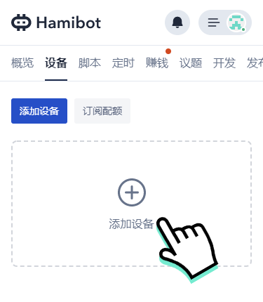
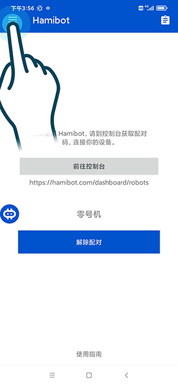

Hamibot 从零跑通：一台安卓机到脚本自动执行的完整实操
刚接触 Hamibot 不知道从哪下手？这篇教程带你走完安装、配对、权限配置、脚本安装运行的全流程，避开新手最容易踩的几个坑，让你的安卓机半小时内就能自动执行任务。
半小时后，你手里那台闲置的安卓手机，就能自动打开指定应用、模拟操作、跑完整个流程。这就是 Hamibot 能帮你做到的事——把重复性的手机操作交给脚本，自己退到一边喝茶。
Hamibot 是一套云端控制的安卓自动化平台：手机上装一个 App 当执行端，浏览器打开控制台当指挥中心，脚本在云端编辑和分发，手机连上就能远程遥控。它兼容 AutoJS 的 JavaScript 语法，控件选择器、OCR 识别、坐标触摸这些核心能力都已经封装好，不用你从零写。
准备条件
开始之前确认这几样东西：
- 一台安卓手机，系统版本 7.0 以上，能正常联网
- 手机存储空间至少剩出 50MB（安装包本身不大，但后续脚本和日志会占一些）
- 你自己的手机号或邮箱，用来注册 Hamibot 控制台账号
- 手机别插着 SIM 卡当砖使——全程需要稳定的网络，Wi-Fi 优先
先在电脑上打开 Hamibot 的官网，注册一个账号。注册完成后登录进去，后面所有操作都在这个网页里完成。
第一步：安装 App 并配对手机
打开控制台后，左侧菜单找到「设备」，点进去能看到一个空的设备列表，右上角有「添加设备」按钮。点它，控制台会弹出一个二维码。

现在拿起手机，用浏览器扫这个二维码，会跳到 App 的下载页面。下载安装包，打开安装——安卓会提示「未知来源应用」，去设置里给浏览器开一下允许安装的权限，装完直接打开 Hamibot App。
App 打开后就是一个扫码界面，对准控制台刚才弹出的那个二维码，手机会自动匹配。匹配成功的标志是：控制台设备列表里出现了你的手机，状态显示「在线」；手机上 Hamibot App 的首页也能看到「已连接」的绿色标签。
配对这一步如果卡住了——比如扫完没反应、控制台一直显示「离线」——先别急着重复扫码。常见原因在手机网络上，确认手机 Wi-Fi 信号满格、没有开 VPN，关掉再试一次。
第二步：把三个权限开齐
Hamibot 要替你操作手机，必须拿到三个核心权限。配对成功后 App 会依次弹出请求，但有些 ROM 会跳过或者默认关闭，这一步手动去系统设置里逐个检查一遍，别等脚本跑起来才发现缺权限。
打开手机设置 → 应用管理 → Hamibot，按顺序确认：
无障碍服务：找到「无障碍」或「辅助功能」入口，把 Hamibot 的开关拉到开。这是最重要的权限——没有它，脚本根本点不了任何按钮、读不了任何控件。系统会弹出一个全屏提示说「这会监控你的操作」，放心确认，Hamibot 只在脚本运行时接管触摸事件，脚本停了就释放。

后台弹出界面：有些脚本需要在锁屏或后台状态下弹提示框，这项权限不开的话弹不出来。设置里找「后台弹出界面」或类似表述的选项，允许 Hamibot 使用。
屏幕截图：OCR 识别和图片匹配类脚本需要截屏能力。App 里触发时会弹系统截图授权，允许就行。
三个权限都开齐后，回到 Hamibot App 首页，三个状态指示全部变绿才算过关。
第三步：装一个脚本跑起来
权限搞定，设备也在线了，接下来就是让它做点什么。回到控制台，左侧菜单找「脚本市场」，里面有现成的脚本可以选购和安装——从简单的定时打卡、自动签到，到复杂的游戏辅助、数据采集，按自己的需求挑一个。
脚本安装到设备上后，进控制台的「设备」详情页，在「已安装脚本」列表里找到刚才那个脚本，点右边的「运行」按钮。几秒之内，手机屏幕会自动亮起来，Hamibot App 弹出悬浮窗显示脚本正在执行，整个过程你能实时看到它在干什么。
运行状态在控制台右上角有个日志图标，点开能看到脚本的每一行输出。第一次运行建议开着日志，一方面知道脚本正常在跑，另一方面出问题时能直接看到报错信息。不确定某个函数怎么写的话顺手翻一下Hamibot文档。
新手最容易翻的三个车
车一：设备隔几个小时就离线
这是新手问得最多的问题。手机放着过夜，早上起来控制台一看设备灰了。根因基本就两种：系统省电策略把 Hamibot 杀了，或者 Wi-Fi 路由器断开了闲置设备。
解决顺序：先去手机设置 → 应用管理 → Hamibot → 省电策略，把它改成「无限制」或「允许后台活动」。然后检查自启动开关有没有打开，ROM 里有没有「后台冻结」「锁屏自动清理」这类功能，把 Hamibot 加进白名单。Wi-Fi 那边如果是工作室大量设备，记得在路由器里关闭闲置自动断开。
车二：脚本点运行很快就结束了
大概率是权限没开全。特别是无障碍服务，有些手机重启后会自动关掉，得手动去设置里重新开一遍。后台弹窗权限也容易被系统偷偷收回，跑之前扫一眼三个权限的状态指示器。
车三：脚本运行到一半卡住
等几秒看看是在加载还是真卡住。真卡住了先点控制台的「停止」按钮，等十秒再重新运行。反复卡住的话，要么是脚本本身有 bug（去脚本市场看有没有更新），要么是手机内存不够——关掉几个大 App 再试。
接下来还能玩什么
跑通第一个脚本之后，可以试着在控制台创建定时任务，让脚本每天自动触发；REST API 这条线可以让你用程序批量给多台设备下发指令，甚至把 Hamibot 接入自己的监控系统。